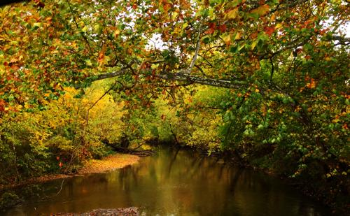

Who hasn't had an awe-inspiring moment while watching a sunrise? Who hasn't felt a sense of something a little more when experiencing a sunset? Or stood in amazement witnessing the power of a thunderstorm with the thunder reverberating off their chest and watching one billion volts of raw energy scorch its way through the air? Or just gazed in wonder at the intricate details of a delicate flower? Peered up at the stars and stood face to face with eternity? Felt pure peace on a calm, drizzly, gray morning? Stood on a beach and was struck by the vastness and mystery of the world's oceans?
These experiences are REAL. Nature is here. Nature is dependable and constant. She will always be there for you when you need her most. There's nothing like having a bad day then taking a peaceful stroll through your favorite local park. Maybe you take a hike through the woods to decompress. You walk calmly past the logs covered in velvet-soft moss as you breathe in clean, slightly humid air. Maybe you like to fish… standing there on the bank just as the sun starts peeking over the horizon and birds announce another day.
I've been missing her lately. Two months of solid cloud cover. But absence makes the heart grow fonder, and my memory of her is making her that much more desirable. Sitting here trying to stay warm in the gray of winter fantasizing about our past flings; sailing on Lake Erie, scaling the Grand Tetons, standing slack-jawed on the edge of lake Jackson rimmed with glow worms and the Milky Way galaxy arching overhead. Or simply walking through the freshly-plowed corn fields of my youth. Who would've thought dirt smelled so good?
Nature tells stories and keeps secrets. These tales are sacred, though. She reveals them only to those who choose to take the time and effort to look. To listen. Some she displays proudly like a pristine waterfall and gives up easily like a delicate butterfly. Some she even flaunts in the form of volcanoes and tornadoes. Others she makes you work for; her history is locked up tight in fossils and strata. The stars put on a magnificent display every night, but to be able to fully appreciate them one must devote an inordinate amount of time and patience in order to decipher the mysteries hidden in the code of light spectra.
Sure, some secrets may require quite a bit of effort to reveal, but Nature rewards handsomely. A flower is beautiful on its surface but knowing that the flower displays more colors invisible to humans that insects find irresistible is amazing. The oceans are awesomely vast and beautiful, but look just below the waves and uncover an entire thriving ecosystem that most of us would believe was extraterrestrial if it were not for the devoted scientists who have discovered so many sunken scientific treasures.

There are some folks who choose to create their own versions of reality by insisting that supernatural events are real. But there's a reason why those events are deemed 'supernatural.' Super-natural. Not based in reality. To me, the universe is more amazing than anyone could ever dream up. The true stories Nature tells are mind-blowing. And the best part? They are true. They are there for all of us to experience and be a part of. For me, when I see Nature expose herself as something even as simple as a quaint Fall afternoon, it inspires a sense of mystery, wonder and awe. It makes me smile. I feel safe here in my natural happy-place.
"Praise this world to the angel," says Rilke. "Do not tell him of the untellable... Tell him things. He will stand astonished."